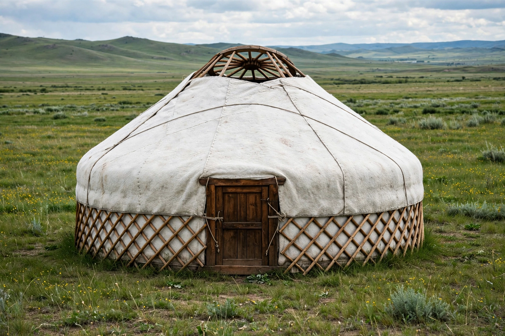

Yurt
From Wikipedia, the free encyclopedia

A yurt (from Turkic yurt, a dwelling place; in Mongolian, ger) is a portable round tent covered and insulated with skins or felt, used as a dwelling by several distinct nomadic groups across the steppes of Central Asia for at least three thousand years. Its structure — a lattice wall (khana), roof poles (uni) meeting a central compression ring (toono), tension bands and felt covers — packs onto camels or a truck in an hour and withstands steppe winters and winds.
The dwelling
The ger is a small architecture of opposites: the compression ring and tension bands hold each other in balance, no nails required. Inside, protocol rules the circle — the door faces south, the honoured place sits opposite under the toono, the west (male) and east (female) halves organise gear and life. A stove at the centre vents through the ring; in Ulaanbaatar's ger districts, coal stoves in winter make the capital's air some of the world's most polluted — the dwelling's ancient design meeting the modern city.
Symbol and survival
The toono crowns Kyrgyzstan's flag (as the tunduk, also its sun), Kazakhstan's emblem bears the shanyrak, and UNESCO lists yurt-making as intangible heritage for Kyrgyzstan and Kazakhstan. Glamping yurts in Western parks and festivals borrow the silhouette at several removes from the herders who still fold their homes onto trucks each season.